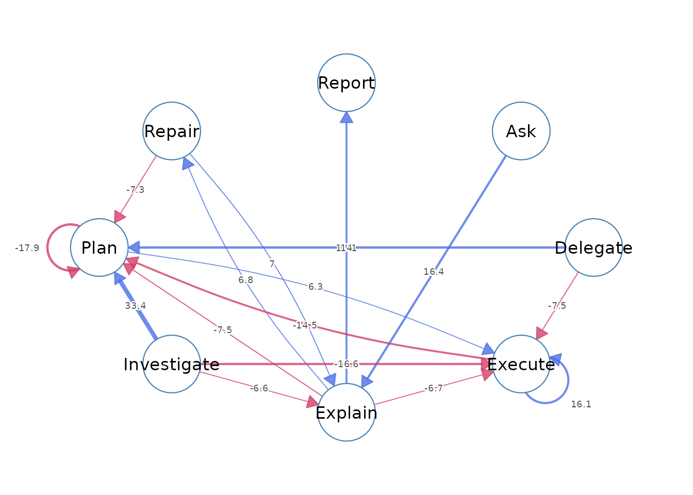

Case study: AI behaviour in vibe-coding sessions
Written by Mohammed Saqr and Sonsoles López-Pernas
Source:vignettes/articles/case-ai.Rmd
case-ai.RmdIn vibe coding, a programmer describes what is wanted in natural language and an AI assistant writes, runs and revises the code. The assistant’s side of such a session is a sequence of behaviours: it investigates the code base, plans, executes changes, explains, reports results, asks questions, delegates work and repairs what went wrong. How these behaviours are ordered says how the assistant works. An assistant that investigates before it plans and plans before it executes follows a different process from one that executes repeatedly and repairs afterwards. The order of repairs is of particular interest: a repair that follows execution suggests that the assistant corrects its own failed actions, a repair that follows a report or an explanation suggests that it corrects course after communicating with the programmer.
Lag sequential analysis tests, for every ordered pair of behaviours, whether the second follows the first more or less often than the frequencies of the two behaviours predict (Bakeman & Quera, 2011). This case study asks what follows what among the eight behaviour codes, what the coarser cluster level adds, whether repair follows execution or reporting more than chance, and how certain and stable the key transitions are.
Data
ai_long is a long event log of coded AI behaviours in
human-AI vibe-coding sessions, taken from the Nestimate package. Each
row is one coded behaviour of the assistant.
-
Session:
session_id— one working session, the sequence boundary; sessions belong to aproject. -
Order:
order_in_session— the position of the event in its session. -
Behaviour:
code— one of eight codes:Ask,Delegate,Execute,Explain,Investigate,Plan,Repair,Report. -
Cluster:
cluster— the code’s broader group:Action,CommunicationorRepair. -
Message:
message_id, withcode_orderordering several codes within one message.
head(ai_long)
#> message_id project session_id timestamp session_date code cluster
#> 1 3441 Project_7 0086cabebd15 1772661600 2026-03-05 Delegate Action
#> 2 3441 Project_7 0086cabebd15 1772661600 2026-03-05 Plan Repair
#> 3 3443 Project_7 0086cabebd15 1772661600 2026-03-05 Execute Action
#> 4 3443 Project_7 0086cabebd15 1772661600 2026-03-05 Plan Repair
#> 5 3445 Project_7 0086cabebd15 1772661600 2026-03-05 Execute Action
#> 6 3447 Project_7 0086cabebd15 1772661600 2026-03-05 Investigate Action
#> code_order order_in_session
#> 1 1 5
#> 2 2 6
#> 3 1 8
#> 4 2 9
#> 5 1 12
#> 6 1 14
with(ai_long, table(code, cluster))
#> cluster
#> code Action Communication Repair
#> Ask 0 99 0
#> Delegate 295 0 0
#> Execute 3258 0 0
#> Explain 0 524 0
#> Investigate 2317 0 0
#> Plan 0 0 1620
#> Repair 0 0 257
#> Report 0 181 0The 8,551 events are dominated by Execute (3,258) and
Investigate (2,317), followed by Plan (1,620).
Ask (99), Report (181) and Repair
(257) are rare. The cluster labels need care: the cluster called
Repair contains the Repair code and also
Plan, and Plan makes up 1,620 of its 1,877
events. A transition into the Repair cluster is therefore
mostly a transition into planning.
with(ai_long, c(projects = length(unique(project)),
sessions = length(unique(session_id)),
messages = length(unique(message_id))))
#> projects sessions messages
#> 34 428 5970
aggregate(cbind(events = order_in_session) ~ session_id, data = ai_long,
FUN = length) |>
summary()
#> session_id events
#> Length :428 Min. : 1
#> N.unique :428 1st Qu.: 7
#> N.blank : 0 Median : 13
#> Min.nchar: 12 Mean : 20
#> Max.nchar: 12 3rd Qu.: 25
#> Max. :138
with(ai_long, table(codes_per_message = table(message_id)))
#> codes_per_message
#> 1 2 3 4 5 6
#> 3781 1851 294 36 6 2The events come from 428 sessions in 34 projects. Sessions range from
1 to 138 coded events, with a median of 13. Of the 5,970 messages, 3,781
carry one code and the others two to six. Within a message the codes are
ordered by code_order and follow each other in
order_in_session, so some transitions are between two codes
of the same message rather than between two messages. The analysis
treats the coded order as the order of behaviour.
What follows what?
lsa() reads the log in long format: session
names the sequence boundary, action the coded behaviour and
order the position, so no transition is counted across
sessions.
fit <- lsa(ai_long, session = "session_id", action = "code",
order = "order_in_session")
fit
#> Lag Sequential Analysis - classical (lag 1, directed)
#> 8 states | 8123 transitions | 8551 events | 428 sequences
#> states: Ask, Delegate, Execute, Explain, Investigate, Plan, Repair, Report
#> independence: G² = 2168.1, df = 49, p <2e-16
#>
#> Significant transitions (p < 0.05): 40 of 64
#> strongest over-represented (of 19):
#> Investigate -> Plan z = +33.4 ***
#> Delegate -> Plan z = +18.1 ***
#> Ask -> Explain z = +16.4 ***
#> Execute -> Execute z = +16.1 ***
#> Explain -> Report z = +14.0 ***
#> ... and 14 more
#>
#> Initial states:
#> Investigate 0.715 ████████████████████████
#> Delegate 0.185 ██████
#> Execute 0.058 ██
#> Plan 0.035 █
#> Ask 0.005
#> Explain 0.002
#> Repair 0.000
#> Report 0.000The fit has 8,123 transitions from 428 sessions. Independence is
clearly rejected (G² = 2,168, df = 49), and 40 of the 64 transitions
depart significantly from it. Sessions open with
Investigate (71.5%) or Delegate (18.5%). The
over-represented transitions are the assistant’s working routines.
transitions(fit, direction = "over", sort = "strength") |> head(10)
#> from to lag count expected prob prob_col adj_res p yules_q
#> 1 Investigate Plan 1 977 441.61 0.4371 0.6087 33.41 1.11e-244 0.734
#> 2 Delegate Plan 1 174 55.32 0.6214 0.1084 18.13 1.96e-73 0.761
#> 3 Ask Explain 1 44 5.86 0.4835 0.0841 16.38 2.56e-60 0.873
#> 4 Execute Execute 1 1575 1229.84 0.5097 0.4872 16.12 1.98e-58 0.358
#> 5 Explain Report 1 56 11.23 0.1111 0.3094 13.95 3.12e-44 0.765
#> 6 Repair Explain 1 43 16.16 0.1713 0.0822 7.01 2.36e-12 0.522
#> 7 Explain Repair 1 42 15.95 0.0833 0.1634 6.85 7.59e-12 0.516
#> 8 Plan Execute 1 709 600.99 0.4695 0.2193 6.29 3.10e-10 0.178
#> 9 Explain Explain 1 66 32.45 0.1310 0.1262 6.29 3.24e-10 0.405
#> 10 Repair Ask 1 13 3.00 0.0518 0.1340 5.90 3.54e-09 0.670
#> kappa kappa_z kappa_p lift sign significant
#> 1 0.4556 33.41 1.15e-244 2.21 over TRUE
#> 2 0.4940 17.86 2.49e-71 3.15 over TRUE
#> 3 0.4082 15.99 1.56e-57 7.51 over TRUE
#> 4 0.1655 15.30 7.73e-53 1.28 over TRUE
#> 5 0.2643 14.07 6.11e-45 4.99 over TRUE
#> 6 0.1130 7.20 6.20e-13 2.66 over TRUE
#> 7 0.1088 6.93 4.15e-12 2.63 over TRUE
#> 8 0.0915 5.21 1.84e-07 1.18 over TRUE
#> 9 0.0689 6.37 1.88e-10 2.03 over TRUE
#> 10 0.1044 5.93 2.94e-09 4.34 over TRUEThe strongest routine is Investigate to
Plan: 977 transitions against 442 expected (z = 33.4);
43.7% of investigations are followed by a plan. Delegate to
Plan follows (z = 18.1; 62.1% of delegations lead to a
plan). Execute repeats itself (z = 16.1; 51.0% of
executions are followed by another). Communication forms its own chain:
a question is followed by an explanation (Ask to
Explain, z = 16.4, lift 7.51) and an explanation by a
report (Explain to Report, z = 14.0).
Plan to Execute is over-represented as well (z
= 6.29), completing the routine of investigating, planning and
executing.
transitions(fit, direction = "under", sort = "strength") |> head(8)
#> from to lag count expected prob prob_col adj_res p yules_q kappa
#> 1 Plan Plan 1 49 298.4 0.0325 0.03053 -17.86 2.36e-71 -0.803 -0.840
#> 2 Investigate Execute 1 563 889.5 0.2519 0.17414 -16.57 1.07e-61 -0.423 -0.362
#> 3 Execute Plan 1 358 610.5 0.1159 0.22305 -14.50 1.30e-47 -0.431 -0.420
#> 4 Delegate Execute 1 51 111.4 0.1821 0.01577 -7.51 5.92e-14 -0.508 -0.546
#> 5 Explain Plan 1 35 99.6 0.0694 0.02181 -7.46 8.65e-14 -0.553 -0.647
#> 6 Repair Plan 1 4 49.6 0.0159 0.00249 -7.34 2.10e-13 -0.881 -0.918
#> 7 Explain Execute 1 129 200.6 0.2560 0.03990 -6.73 1.73e-11 -0.333 -0.354
#> 8 Investigate Explain 1 79 143.9 0.0353 0.15105 -6.57 5.04e-11 -0.380 -0.444
#> kappa_z kappa_p lift sign significant
#> 1 -18.16 1.04e-73 0.1642 under TRUE
#> 2 -16.02 9.06e-58 0.6329 under TRUE
#> 3 -14.73 4.13e-49 0.5864 under TRUE
#> 4 -7.49 6.85e-14 0.4576 under TRUE
#> 5 -7.39 1.42e-13 0.3515 under TRUE
#> 6 -7.22 5.10e-13 0.0807 under TRUE
#> 7 -6.56 5.42e-11 0.6431 under TRUE
#> 8 -6.39 1.67e-10 0.5490 under TRUEThe avoided transitions sharpen the routine. A plan is almost never
followed by another plan (49 against 298 expected, z = -17.9): planning
is a single step, not a loop. The assistant rarely executes straight
after investigating (z = -16.6) and rarely returns to planning after
executing (z = -14.5): it investigates, plans once, and then executes.
Repair to Plan is almost absent (4 against
49.6 expected).
A lag transition network shows the sixteen strongest residuals.
plot_transitions(fit, top = 16)
Each node is a behaviour and each arrow a transition, labelled with
its adjusted residual. Blue arrows are over-represented and red arrows
avoided; width grows with the size of the residual. Two clusters are
visible. The action routine runs from Investigate and
Delegate into Plan, with the thick blue arrow
from Investigate, and from Plan to
Execute, which loops on itself. The communication chain
runs from Ask to Explain and on to
Report. The red arrows mark the shortcuts the assistant
avoids: from Investigate directly to Execute,
from Execute back to Plan and from
Plan to itself.
The cluster-level view
The three clusters give a coarser description. The same call with
action = "cluster" fits the cluster sequence.
fit_cluster <- lsa(ai_long, session = "session_id", action = "cluster",
order = "order_in_session")
transitions(fit_cluster, sort = "strength")
#> from to lag count expected prob prob_col adj_res p yules_q
#> 1 Action Repair 1 1646 1284.8 0.2937 0.8840 20.61 2.01e-94 0.632
#> 2 Repair Repair 1 115 403.7 0.0653 0.0618 -18.49 2.40e-76 -0.688
#> 3 Communication Communication 1 206 74.6 0.2721 0.2572 16.82 1.87e-63 0.619
#> 4 Action Communication 1 377 552.7 0.0673 0.4707 -14.14 2.20e-45 -0.475
#> 5 Repair Action 1 1428 1183.7 0.8109 0.2615 14.01 1.28e-44 0.425
#> 6 Action Action 1 3582 3767.5 0.6391 0.6560 -9.48 2.55e-21 -0.247
#> 7 Communication Repair 1 101 173.5 0.1334 0.0542 -6.59 4.54e-11 -0.342
#> 8 Communication Action 1 450 508.8 0.5945 0.0824 -4.78 1.72e-06 -0.184
#> 9 Repair Communication 1 218 173.7 0.1238 0.2722 4.01 6.19e-05 0.167
#> kappa kappa_z kappa_p lift sign significant
#> 1 0.6075 20.13 3.90e-90 1.281 over TRUE
#> 2 -0.7209 -18.75 2.06e-78 0.285 under TRUE
#> 3 0.1790 16.55 1.50e-61 2.760 over TRUE
#> 4 -0.3169 -13.97 2.39e-44 0.682 under TRUE
#> 5 0.2370 7.86 3.98e-15 1.206 over TRUE
#> 6 -0.1111 -22.49 5.56e-112 0.951 under TRUE
#> 7 -0.4277 -6.76 1.41e-11 0.582 under TRUE
#> 8 -0.1847 -8.14 3.97e-16 0.884 under TRUE
#> 9 0.0662 3.72 2.02e-04 1.255 over TRUEAll 9 cluster transitions are significant. Action to
Repair is the strongest (z = 20.6, 1,646 transitions),
followed by Communication repeating itself (z = 16.8) and
Repair to Action (z = 14.0), while
Repair repeating itself is avoided (z = -18.5). Read with
the cluster labels alone, this would describe an assistant that acts,
repairs and acts again. The code-level fit shows what the clusters hide:
Action to Repair is mostly
Investigate, Delegate and Execute
followed by Plan, and the avoided Repair loop
reflects mainly the avoided Plan loop (49 plans followed by
a plan, against 298 expected). The cluster level is a useful summary of
the alternation between doing and planning, but a statement about repair
needs the codes.
Does repair follow execution or reporting?
The question is answered on the Repair code.
lsa_lags() fits the model at lags 1 to 3, and
lag_profile() follows the two candidate transitions.
lags <- lsa_lags(ai_long, lags = 1:3, session = "session_id",
action = "code", order = "order_in_session")
lag_profile(lags, from = "Execute", to = "Repair")
#> lag from to count prob adj_res p significant
#> 1 1 Execute Repair 93 0.0301 -0.622 0.534 FALSE
#> 2 2 Execute Repair 101 0.0343 0.451 0.652 FALSE
#> 3 3 Execute Repair 82 0.0294 -1.595 0.111 FALSE
lag_profile(lags, from = "Report", to = "Repair")
#> lag from to count prob adj_res p significant
#> 1 1 Report Repair 14 0.0864 4.024 5.73e-05 TRUE
#> 2 2 Report Repair 4 0.0263 -0.474 6.36e-01 FALSE
#> 3 3 Report Repair 6 0.0423 0.575 5.66e-01 FALSERepair does not follow execution more than chance. 93 executions, 3.0%, are followed by a repair, close to the 97.8 expected (z = -0.62 at lag 1), and the residual stays between -1.6 and 0.5 at lags 2 and 3. A report, by contrast, is followed by a repair in 8.6% of cases at lag 1 (14 transitions, z = 4.02, p < 0.001). The effect is confined to the next event: at lags 2 and 3 the share falls to 2.6% and 4.2% and is not significant.
The full set of transitions into Repair shows which
other behaviours precede it.
transitions(fit) |> subset(to == "Repair")
#> from to lag count expected prob prob_col adj_res p yules_q
#> 49 Ask Repair 1 2 2.88 0.02198 0.00778 -0.529 5.96e-01 -0.187
#> 50 Delegate Repair 1 4 8.86 0.01429 0.01556 -1.688 9.14e-02 -0.394
#> 51 Execute Repair 1 93 97.76 0.03010 0.36187 -0.622 5.34e-01 -0.041
#> 52 Explain Repair 1 42 15.95 0.08333 0.16342 6.846 7.59e-12 0.516
#> 53 Investigate Repair 1 40 70.71 0.01790 0.15564 -4.359 1.30e-05 -0.355
#> 54 Plan Repair 1 60 47.77 0.03974 0.23346 1.992 4.64e-02 0.148
#> 55 Repair Repair 1 2 7.94 0.00797 0.00778 -2.176 2.95e-02 -0.613
#> 56 Report Repair 1 14 5.13 0.08642 0.05447 4.024 5.73e-05 0.501
#> kappa kappa_z kappa_p lift sign significant
#> 49 -0.3278 -0.578 5.64e-01 0.695 under FALSE
#> 50 -0.5488 -1.689 9.13e-02 0.452 under FALSE
#> 51 -0.0502 -0.642 5.21e-01 0.951 under FALSE
#> 52 0.1088 6.932 4.15e-12 2.634 over TRUE
#> 53 -0.4256 -4.223 2.41e-05 0.566 under TRUE
#> 54 0.0543 1.828 6.75e-02 1.256 over TRUE
#> 55 -0.7411 -2.123 3.37e-02 0.252 under TRUE
#> 56 0.0488 3.766 1.66e-04 2.731 over TRUEExplain to Repair is the strongest (42
transitions, z = 6.85, lift 2.63), followed by Report to
Repair (lift 2.73). Investigate to
Repair is avoided (z = -4.36). Repair therefore follows the
assistant’s communication, an explanation or a report, and not its
actions. A repair is in turn followed by an explanation
(Repair to Explain, z = 7.01) or a question
(Repair to Ask, z = 5.90), as the
over-represented transitions above show. In these sessions repairs are
embedded in the communication with the programmer, consistent with a
correction prompted by what the programmer sees in the assistant’s
explanation or report.
How certain are the key transitions?
bootstrap_lsa() resamples whole sessions with
replacement, R = 1,000 times, and returns percentile intervals for every
transition.
set.seed(2026)
boot <- bootstrap_lsa(fit, R = 1000)
boot
#> <lsa_bootstrap>
#> engine: classical
#> level: sequence
#> replicates: 1000
#> CI level: 95%
#> stable edges: 42 of 64
transitions(boot, significant = TRUE, sort = "strength") |> head(6)
#> from to observed count_mean count_se count_ci_low count_ci_high
#> 1 Investigate Plan 977 978.4 50.19 886 1078
#> 2 Delegate Plan 174 173.7 14.65 146 204
#> 3 Plan Plan 49 49.3 8.00 33 65
#> 4 Investigate Execute 563 564.0 41.32 485 644
#> 5 Ask Explain 44 43.8 8.04 29 60
#> 6 Execute Execute 1575 1573.3 132.92 1325 1835
#> adj_res_observed adj_res_mean adj_res_se adj_res_ci_low adj_res_ci_high adj_res_p_boot
#> 1 33.4 33.4 1.458 30.6 36.1 0
#> 2 18.1 18.1 1.350 15.7 20.8 0
#> 3 -17.9 -17.9 0.756 -19.3 -16.3 0
#> 4 -16.6 -16.5 1.068 -18.6 -14.5 0
#> 5 16.4 16.3 2.450 11.6 21.1 0
#> 6 16.1 16.1 1.319 13.5 18.7 0
#> adj_res_stable prob_observed prob_mean prob_ci_low prob_ci_high yules_q_observed
#> 1 TRUE 0.4371 0.4374 0.4083 0.4672 0.734
#> 2 TRUE 0.6214 0.6221 0.5674 0.6786 0.761
#> 3 TRUE 0.0325 0.0326 0.0231 0.0423 -0.803
#> 4 TRUE 0.2519 0.2519 0.2280 0.2747 -0.423
#> 5 TRUE 0.4835 0.4814 0.3636 0.5953 0.873
#> 6 TRUE 0.5097 0.5090 0.4848 0.5324 0.358
#> yules_q_mean yules_q_ci_low yules_q_ci_high
#> 1 0.734 0.700 0.764
#> 2 0.760 0.705 0.809
#> 3 -0.803 -0.858 -0.748
#> 4 -0.422 -0.469 -0.374
#> 5 0.869 0.803 0.915
#> 6 0.357 0.307 0.40642 of the 64 transitions have a residual interval that excludes zero.
The routines are certain: the residual of Investigate to
Plan lies between 30.6 and 36.1, and the probability of a
plan after an investigation between 0.408 and 0.467. The interval of
Ask to Explain is the widest of the six (11.6
to 21.1) because questions are rare, but it is far from zero.
transitions(boot) |> subset(to == "Repair")
#> from to observed count_mean count_se count_ci_low count_ci_high
#> 49 Ask Repair 2 1.96 1.41 0 5
#> 50 Delegate Repair 4 4.05 1.94 1 8
#> 51 Execute Repair 93 92.58 13.83 66 121
#> 52 Explain Repair 42 41.76 7.66 28 58
#> 53 Investigate Repair 40 39.74 7.10 26 54
#> 54 Plan Repair 60 60.00 8.05 45 75
#> 55 Repair Repair 2 2.02 1.42 0 5
#> 56 Report Repair 14 13.93 3.64 7 21
#> adj_res_observed adj_res_mean adj_res_se adj_res_ci_low adj_res_ci_high adj_res_p_boot
#> 49 -0.529 -0.535 0.874 -1.8431 1.365 0.506
#> 50 -1.688 -1.653 0.657 -2.7844 -0.223 0.020
#> 51 -0.622 -0.633 1.014 -2.5103 1.465 0.536
#> 52 6.846 6.805 1.597 3.9041 10.000 0.000
#> 53 -4.359 -4.372 0.831 -5.9750 -2.557 0.000
#> 54 1.992 2.030 1.031 0.0522 4.027 0.044
#> 55 -2.176 -2.158 0.547 -3.0745 -1.001 0.000
#> 56 4.024 3.987 1.516 1.2138 6.992 0.002
#> adj_res_stable prob_observed prob_mean prob_ci_low prob_ci_high yules_q_observed
#> 49 FALSE 0.02198 0.02176 0.00000 0.0575 -0.187
#> 50 TRUE 0.01429 0.01447 0.00341 0.0286 -0.394
#> 51 FALSE 0.03010 0.02991 0.02304 0.0366 -0.041
#> 52 TRUE 0.08333 0.08289 0.05952 0.1097 0.516
#> 53 TRUE 0.01790 0.01773 0.01207 0.0236 -0.355
#> 54 TRUE 0.03974 0.03972 0.03054 0.0492 0.148
#> 55 TRUE 0.00797 0.00801 0.00000 0.0206 -0.613
#> 56 TRUE 0.08642 0.08554 0.04736 0.1271 0.501
#> yules_q_mean yules_q_ci_low yules_q_ci_high
#> 49 -0.2914 -1.00000 0.3025
#> 50 -0.4136 -0.81571 -0.0434
#> 51 -0.0434 -0.17507 0.0926
#> 52 0.5084 0.36911 0.6314
#> 53 -0.3595 -0.51583 -0.2044
#> 54 0.1480 0.00442 0.2749
#> 55 -0.6362 -1.00000 -0.2328
#> 56 0.4798 0.22261 0.6549Explain to Repair has a residual interval
of 3.90 to 10.00 and Report to Repair one of
1.21 to 6.99; both exclude zero. Execute to
Repair has an interval of -2.51 to 1.47, which contains
zero and is centred close to it: there is no link between execution and
repair to detect, rather than a link too uncertain to establish. The
interval of Report to Repair is wide because
it rests on 14 transitions, but its lower bound stays above 1.
Plan to Repair is the weakest over-represented
transition into Repair; its interval (0.05 to 4.03) barely
excludes zero.
Stability asks the same question by subsampling.
stability_lsa() refits the model on R = 500 subsamples of
80% of the sessions.
set.seed(2026)
stab <- stability_lsa(fit, R = 500)
stab
#> <lsa_stability>
#> engine: classical
#> replicates: 500
#> proportion: 80%
#> min stable: 95%
#> failed: 0 of 500 replicates
#> stable edges: 32 of 64 (>= 95% across replicates)
transitions(stab) |> subset(to == "Repair")
#> from to observed_sig stability stable
#> 49 Ask Repair FALSE 0.000 FALSE
#> 50 Delegate Repair FALSE 0.098 FALSE
#> 51 Execute Repair FALSE 0.000 FALSE
#> 52 Explain Repair TRUE 1.000 TRUE
#> 53 Investigate Repair TRUE 1.000 TRUE
#> 54 Plan Repair TRUE 0.354 FALSE
#> 55 Repair Repair TRUE 0.394 FALSE
#> 56 Report Repair TRUE 0.984 TRUE32 of the 64 transitions are significant in at least 95% of the
subsamples. Explain to Repair and
Investigate to Repair are significant in all
of them and Report to Repair in 98.4%, so it
passes the 95% threshold. Plan to Repair,
significant in the full fit at p = 0.046, is significant in only 35.4%
of subsamples and should not be interpreted.
What the analysis shows
- The assistant follows a routine of investigating, planning once and
executing:
InvestigatetoPlanis the strongest transition (z = 33.4), planning does not repeat (z = -17.9), and execution repeats (z = 16.1). - Communication is a separate chain: questions lead to explanations and explanations to reports.
- At the cluster level, the alternation between
Actionand theRepaircluster is mostly an alternation between action and planning, because theRepaircluster is mostlyPlan. - Repair does not follow execution more than chance (z = -0.62, bootstrap interval containing zero). It follows explanations and reports, at lag 1 only, and is followed by further explanation or a question. The link from reports rests on 14 transitions but is stable in 98.4% of subsamples.
The analysis has limits. The data are coded behaviours of the
assistant only; the programmer’s turns between them are not in the log,
so a transition from Report to Repair may pass
through a programmer’s reply that the analysis cannot see. Several codes
of one message are ordered by the coding, not by time. The 428 sessions
come from 34 projects, and the bootstrap and the subsampling treat
sessions as independent, which ignores any similarity of sessions within
a project. Finally, the model pools all sessions: a project or a phase
of a session with a different routine would need a grouped fit (see the group comparison article). For the
long-format arguments, see the event logs
guide; for the network display, see the lag transition networks
article.